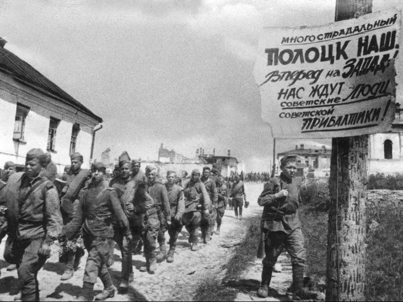
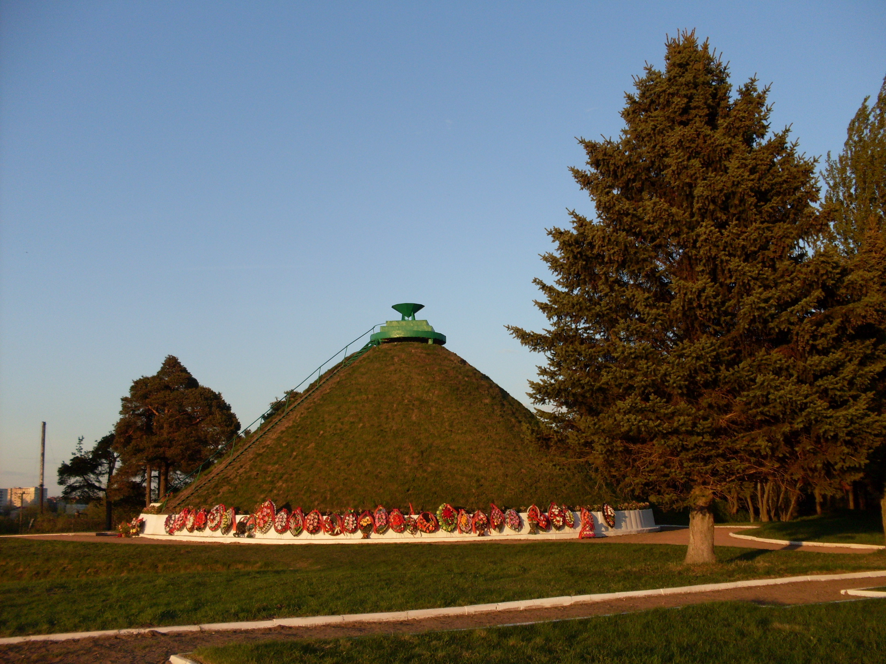
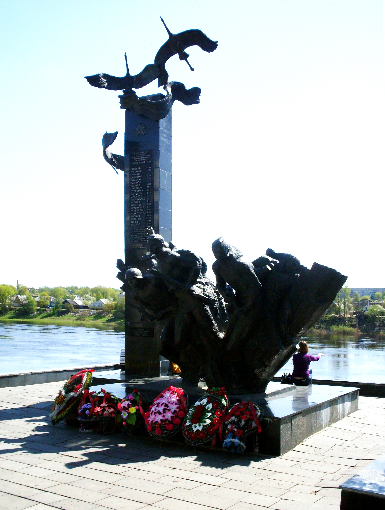

Полоцкая наступательная операция - одна из ключевых в серии боевых действий Советской Армии в 1944 года, которая значительно укрепила позиции Красной армии на советско-германском фронте и способствовала освобождению важнейших стратегических территорий Прибалтики и Беларуси. Эта масштабная операция последовала за успешно завершенной Витебско-Оршанской наступательной операцией и имела целью окончательное разрушение немецких оборонительных линий на Южных границах Полоцка, а также освобождение города, обладающего стратегическим и военно-логистическим значением. Основная задача полоцкой операции заключалась в полном уничтожении группировки немецких войск, занимавшей оборонительный район, и прорыве оборонительных линий противника на подступах к Полоцку. Для достижения этой цели советские войска выстроили продуманную стратегию, которая включала окружение немецких сил с юга и северо-востока, а также нанесение мощных ударов по флангам. Вражеская оборона представляла собой сложную систему, сформированную соединениями 16-й армии группы армий «Север», возглавляемой генерал-полковником Г. Линдеманом, и частями 3-й танковой армии группы армий «Центр». В районе Полоцка располагалось шесть немецких дивизий, оборудованных тяжелой техникой, орудийными позициями и хорошо укрепленными оборонительными рубежами. Особенностью немецкой обороны стала полоса «Тигр», представляющая собой мощную линию обороны, закрепленную тяжелой бронетехникой и артиллерией, а также расположенную в труднодоступной озёрно-болотистой местности, которая осложняла продвижение советских войск. В этом районе было создано так называемое «кольцо» круговой обороны, что позволяло немцам держать оборону в течение длительного времени, а также организовывать контратаки. Их стратегическая цель - задержать продвижение советских войск и подготовиться к возможной контратаке или перегруппировке сил.


Наступательные действия начались 29 июня 1944 года. Главными силами для нанесения ударов выступали 6-я гвардейская армия, действовавшая на правом фланге, и 4-я Ударная армия - на левом, в направлении Котляны - Полоцк. В течение этого дня и следующего они вели наступление, охватывая фланги вражеской группировки, выводя из строя её коммуникации и укрепления. К 30 июня советские войска достигли важнейших рубежей обороны врага. В этот день 6-я гвардейская армия прорвала оборону на подступах к Полоцку и вышла к его окраинам, а войска 43-й армии и части 1-го танкового корпуса успешно перерезали железную дорогу Полоцк-Молодечно в районе Германовичи-Докшицы. Это играло критическую роль - транспортные пути противника были значительно нарушены, что снижало его возможность быстро доставлять подкрепления и ресурсы. Особое значение в этой операции имел 1-й танковый корпус, который 29 июня освободил город Ушачи, вышел на оперативный простор и с решительными ударами с флангов и тыла способствовал окружению и уничтожению немецких войск. Быстрый прорыв соединений 6-й гвардейской и 43-й армий обеспечил окружение крупной части немецких сил и создал ударную мощь, уже не позволяющую противнику сопротивляться в полном объеме. Обратить внимание следует также на тактическое мастерство советского командования, которое использовало преимущества местности - озёрно-болотистых природных препятствий и укрепленных рубежей - для максимальной эффективности своих наступательных действий. В результате город был освобожден, а фронт - существенно продвинут назад, что стало серьезным ударом по немецко-латвийской и белорусской обороне.

Упорные и ожесточённые бои за город Полоцк продолжались на протяжении четырёх дней. В ходе этих тяжелых столкновений советские войска стремительно продвигались вперёд, испытывая мощное сопротивление немецких подразделений, стремившихся удержать стратегически важный город и его оборонительный узел. Благодаря мужеству и слаженности действий соединений 1-го Прибалтийского фронта, уже к утру 4 июля 1944 года город был полностью очищен от противника и возвращен под контроль Советской армии. В результате проведённой операции советские войска овладели ключевым Полоцким узлом обороны - важнейшим пунктом системы германской защиты в этом районе. Это позволило существенно ослабить немецкую группировку и разгромить её в этом секторе фронта. В ходе операции было уничтожено шесть немецких дивизий, что существенно повлияло на общую боеспособность противника. За всего лишь шесть суток боевых действий советские войска достигли впечатляющего продвижения - они преодолели расстояние в 120-130 километров, успешно прорвались через оборону врага и вышли на новые рубежи - линию Опса - Козьяны - озеро Нарочь
Победа в Полоцкой операции имела далеко идущие последствия: она ускорила освобождение всей Беларуси и способствовала дальнейшему наступлению Красной армии в сторону Восточной Пруссии и балтийских стран. Эта операция стала ярким примером тактического мастерства и стратегической решимости советских войск, а достижения фронта в целом - важной вехой в ходе Великой Отечественной войны.